CS224N-NLP Assignment individual solution
Assignment 1:
Q1:Softmax:
1.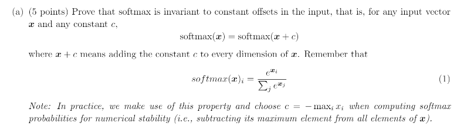
Prove:$softmax(x)=softmax(x+c)$,x is a vector and c is a constant
begin:
Let $x=(x_1,x_2,…,x_n)$
and then we know that $softmax(x)=(\frac{e^{x_1}}{\sum_j e^{x_j}},\frac{e^{x_2}}{\sum_j e^{x_j}},…,\frac{e^{x_n}}{\sum_j e^{x_j}})$
and $softmax(x+c)=(\frac{e^{x_1+c}}{\sum_j e^{x_j+c}},\frac{e^{x_2+c}}{\sum_j e^{x_j}},…,\frac{e^{x_n+c}}{\sum_j e^{x_j+c}})=\\=(\frac{e^{x_1}e^c}{e^c\sum_j e^{x_j}},\frac{e^{x_2}e^c}{e^c\sum_j e^{x_j}},…,\frac{e^{x_n}e^c}{e^c\sum_j e^{x_j}})=(\frac{e^{x_1}}{\sum_j e^{x_j}},\frac{e^{x_2}}{\sum_j e^{x_j}},…,\frac{e^{x_n}}{\sum_j e^{x_j}})=softmax(x)$
Then this question is solved
2.softmax
import numpy as np
def softmax_inrow(m):
# print(m)
rm=np.max(m,axis=1)
rm_r=rm.reshape(rm.shape[0],1)
#print(rm_r)
m1=m-rm_r
e1=np.exp(m1)
sum=np.sum(e1,axis=1)
sum=sum.reshape(sum.shape[0],1)
e1=e1/sum
#print(e1)
return e1
def softmax_incoloum(m):
# print(m)
rm = np.max(m, axis=0)
#rm_r = rm.reshape(rm.shape[0], 1)
#print(rm)
m1 = m - rm
#print(m1)
e1 = np.exp(m1)
sum = np.sum(e1, axis=0)
#sum = sum.reshape(sum.shape[0], 1)
e1 = e1 / sum
# print(e1)
return e1
N=input()
D=input()
matrix=np.random.rand(int(N),int(D))
print(softmax_incoloum(matrix))
#print(softmax2(matrix))
Q2:
2.1:对sigma求导，并利用sigma函数来表示其导数
As $\sigma(x)=\frac{1}{1+e^{-x}}$
$\sigma’(x)=\frac{e^{-x}}{(1+e^{-x})^2}\\e^{-x}=\frac{1}{\sigma(x)}-1$
So,$\sigma’(x)=\sigma(x)(1-\sigma(x))$
2.2:求softmax作用于$\theta$下,ont-hot和softmax$\theta$交叉熵的梯度
solution:
We know that $CE(y,\hat y)=-\sum_iy_ilog(\hat y_i)$
and let $y=(s_1,s_2,…,s_n)$
$\theta=(d_1,d_2,…,d_n)$
and then $\frac{\partial CE}{\partial d_i}=\frac{\partial CE}{\partial s_k}\frac{\partial s_k}{\partial d_i}$
First we consider $\frac{\partial CE}{\partial s_k}$
$\frac{\partial CE}{\partial s_k}=\frac{\partial (-\sum_k y_klog(s_k))}{\partial s_k}=-\sum_k y_k\frac{1}{s_k}$
and then we consider $\frac{\partial s_k}{\partial d_i}$
there are two situations need to consider:
when $k=i$
$\frac{\partial s_k}{\partial d_i}=\frac{\partial ( \frac{e^z_j}{\sum_ke^z_k} )}{\partial s_k}=\frac{\partial s_i}{\partial d_i}=s_i-s_i^2$
when $k!=i$
$\frac{\partial s_k}{\partial d_i}=\frac{\partial ( \frac{e^z_j}{\sum_ke^z_k} )}{\partial s_k}=-s_is_j$
so $\frac{\partial CE}{\partial d_i}=\frac{\partial CE}{\partial s_k}\frac{\partial s_k}{\partial d_i}=-\frac{y_i}{s_i}s_i(1-s_i)+\sum_{i!=j}y_jy_s=s_i-y_i=s_i-1$
i.e. 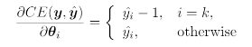It’s say that the $softmax(\theta)$ minus 1 in element i(i is the label of right prediction),then we get the gradient
2.3
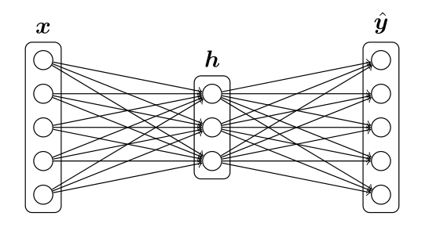
loss function使用上述的交叉熵$CE(y,\hat y)$
h->y^激活函数为softmax
x->h激活函数为sigma
求梯度
$\hat y=softmax(W_2h+b_2)$
$h=\sigma(W_1x+b_1)$
solution:
similar to 2.2
i is the position index right prediction
$\frac{\partial CE}{\partial x_i}=\frac{\partial CE}{\partial \hat y_k}\frac{\partial \hat y_k}{\partial h_j}\frac{\partial h_j}{\partial x_i}$
similar to 2.2, $\frac{\partial CE}{\partial x_i}=W_2(\hat y_i-y_i)\frac{\partial h_j}{\partial x_i}$
consider $\frac{\partial h_j}{\partial x_i}$
if j=1,then $\frac{\partial h_j}{\partial x_i}=W_1\sigma’(W_1x+b)$,else $\frac{\partial h_j}{\partial x_i}=0$
so $\frac{\partial CE}{\partial x_i}=W_2(\hat y_i-y_i)-\sigma’(W_1x+b_1)_iW_1$
2.4(在2.3之前先做这题，把维度搞清楚)
assuming the input is D x -dimensional, the output is D y -dimensional, and there are H hidden units
x’s shape is $(M,D_x)$ and $W_1$’s shape is $(D_x,H)$,and $W_2$’s shape is $(H,D_y)$,$b_1$’s shape ‘(1,H)$b_2$’s shape (1,Dy) ‘
so there are $H(D_x+1)+D_y(H+1)$ parameters we need to train’
2.5
import numpy as np
def sigmoid(m):
t=1.0/(1+np.exp(-m))
return t
def sigmoid_gradient(x):
return sigmoid(x)*(1.0-sigmoid(x))
2.6
import numpy as np
import random
def gradcheck_naive(f, x):
""" Gradient check for a function f.
Arguments:
f -- a function that takes a single argument and outputs the
cost and its gradients
x -- the point (numpy array) to check the gradient at
"""
rndstate = random.getstate()
random.setstate(rndstate)
fx, grad = f(x) # Evaluate function value at original point,获取函数值和梯度
h = 1e-4 # Do not change this!
it = np.nditer(x, flags=['multi_index'], op_flags=['readwrite']) #一个迭代器，flags=['multi_index']表示对a进行多重索引，op_flags=['readwrite']表示不仅可以对x进行read（读取），还可以write（写入）
while not it.finished: #开始迭代
ix = it.multi_index #获取迭代到的索引，是(a,b)
# Try modifying x[ix] with h defined above to compute
# numerical gradients. Make sure you call random.setstate(rndstate)
# before calling f(x) each time. This will make it possible
# to test cost functions with built in randomness later.
### YOUR CODE HERE:
x[ix] += h
random.setstate(rndstate)
new_f1 = f(x)[0]
x[ix] -= 2 * h
random.setstate(rndstate)
new_f2 = f(x)[0]
x[ix] += h
numgrad = (new_f1 - new_f2) / (2 * h)
### END YOUR CODE
#比较梯度
# Compare gradients
reldiff = abs(numgrad - grad[ix]) / max(1, abs(numgrad), abs(grad[ix]))
if reldiff > 1e-5:
print
"Gradient check failed."
print
"First gradient error found at index %s" % str(ix)
print
"Your gradient: %f \t Numerical gradient: %f" % (
grad[ix], numgrad)
return
it.iternext() # Step to next dimension
print("Gradient check passed!")
反向传播梯度计算
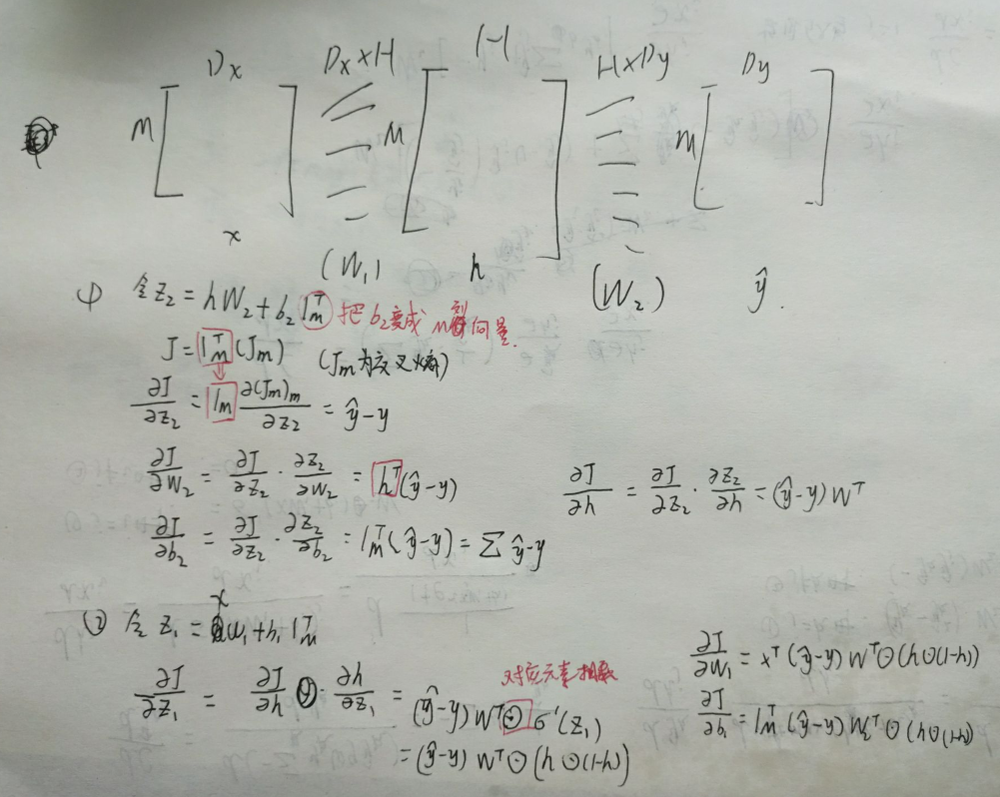
反向传播梯度计算
反向传播:
def forward_back_prop(data, labels, params, dimensions):
"""
2个隐层的神经网络的前向运算和反向传播
"""
if len(data.shape) >= 2:
(N, _) = data.shape
### 展开每一层神经网络的参数
ofs = 0
Dx, H, Dy = (dimensions[0], dimensions[1], dimensions[2]) #获取3个超参数
#获取所有参数
W1 = np.reshape(params[ofs:ofs + Dx * H], (Dx, H)) #取出w1,大小Dx * H
ofs += Dx * H #偏移增加
b1 = np.reshape(params[ofs:ofs + H], (1, H))
ofs += H
W2 = np.reshape(params[ofs:ofs + H * Dy], (H, Dy))
ofs += H * Dy
b2 = np.reshape(params[ofs:ofs + Dy], (1, Dy))
### 前向传播
h = sigmoid(np.dot(data,W1) + b1)
yhat = softmax_inrow(np.dot(h,W2) + b2)
### END
### 反向传播
cost = np.sum(-np.log(yhat[labels == 1])) / data.shape[0] #-ylog(hat_y) (仅取q的项)，然后求平均
d3 = (yhat - labels) / data.shape[0]
gradW2 = np.dot(h.T, d3) #根据公式来，计算gradW2
gradb2 = np.sum(d3, 0, keepdims=True)
dh = np.dot(d3, W2.T)
grad_h = sigmoid_gradient(h) * dh
gradW1 = np.dot(data.T, grad_h)
gradb1 = np.sum(grad_h, 0)
### END
### Stack gradients (do not modify)
grad = np.concatenate((gradW1.flatten(), gradb1.flatten(),
gradW2.flatten(), gradb2.flatten()))
return cost,grad
3.word2vec
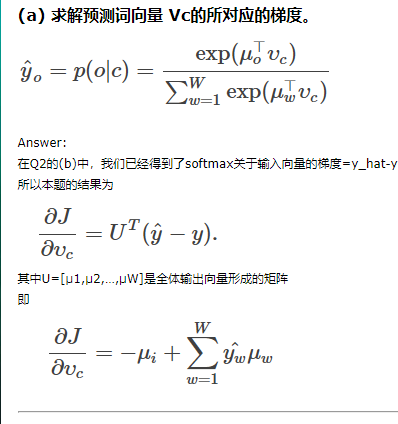
因为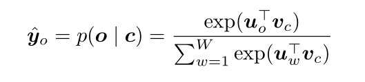
$dsoftmax/dx_o(softmax关于输入向量的梯度)=\hat y-y$
链式法则。图中$\hat y=softmax(U^Tv_c)$
所以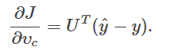
分类讨论。就得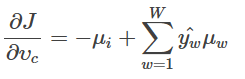
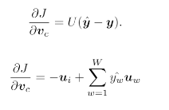
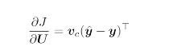
(b)类似a
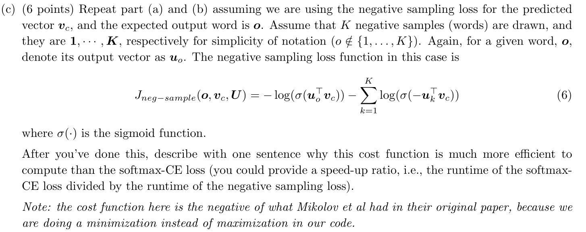
一样。求导就行
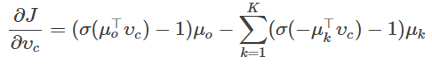
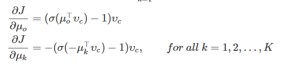
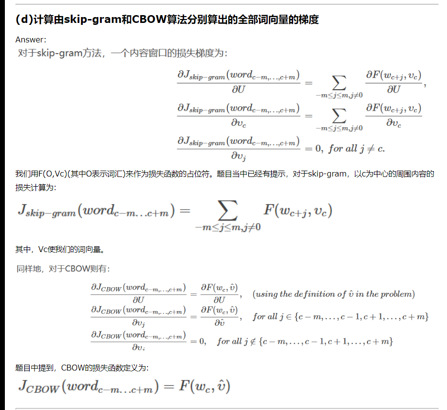
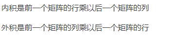
import numpy as np
import random
from q1_softmax import softmax_inrow
from q2_gradcheck import gradcheck_naive
from q2_sigmoid import sigmoid, sigmoid_gradient
#normalize:x每个元素都除以各行平方和的平方根。
def normalizeRows(x):
""" Row normalization function
Implement a function that normalizes each row of a matrix to have
unit length.
"""
### YOUR CODE HERE
temp_x=x
temp_x=np.square(x)
norm=np.sum(temp_x,axis=1)
norm=np.sqrt(norm)
#print(x)
#print(norm)
print((x/norm))
### END YOUR CODE
return (x/norm)
#target是目标的位置
def softmaxCostAndGradient(predicted, target, outputVectors, dataset):
""" Softmax cost function for word2vec models
Implement the cost and gradients for one predicted word vector
and one target word vector as a building block for word2vec
models, assuming the softmax prediction function and cross
entropy loss.
Arguments:
predicted -- numpy ndarray, predicted word vector (\hat{v} in
the written component)
target -- integer, the index of the target word
outputVectors -- "output" vectors (as rows) for all tokens
dataset -- needed for negative sampling, unused here.
Return:
cost -- cross entropy cost for the softmax word prediction
gradPred -- the gradient with respect to the predicted word
vector 对已预测词向量的梯度
grad -- the gradient with respect to all the other word
vectors 对其他所有词向量的梯度
We will not provide starter code for this function, but feel
free to reference the code you previously wrote for this
assignment!
"""
#target是目标位置
### YOUR CODE HERE
# 计算预测结果
v_hat = predicted #已经预测的词向量（中心词向量）
z = np.dot(outputVectors, v_hat) #预测得分。也就是输出词向量和中心词向量点乘(可以得到结果得分)
preds = softmax_inrow(z) #对预测得分softmax
cost = -np.log(preds[target]) #计算损失
# 计算梯度
z = preds.copy() #预测得分 (其实就是hat_y)
z[target] -= 1.0 #梯度为 hat^y-y
#z相当于^y
grad = np.outer(z, v_hat) #外积 # dJ/dU hat_y*u_w v_hat其实就是v_c 计算输出词向量矩阵的梯度
# np.outer函数:
# ①对于多维向量，全部展开变为一维向量
# ②第一个参数表示倍数，使得第二个向量每次变为几倍
# ③第一个参数确定结果的行，第二个参数确定结果的列
gradPred = np.dot(outputVectors.T, z) #dJ/dv_c
### END YOUR CODE
return cost, gradPred, grad
def getNegativeSamples(target, dataset, K):
""" Samples K indexes which are not the target """
indices = [None] * K
for k in range(K):
newidx = dataset.sampleTokenIdx()
while newidx == target:
newidx = dataset.sampleTokenIdx()
indices[k] = newidx
return indices
def negSamplingCostAndGradient(predicted, target, outputVectors, dataset,
K=10):
""" Negative sampling cost function for word2vec models
Implement the cost and gradients for one predicted word vector
and one target word vector as a building block for word2vec
models, using the negative sampling technique. K is the sample
size.
Note: See test_word2vec below for dataset's initialization.
Arguments/Return Specifications: same as softmaxCostAndGradient
"""
# Sampling of indices is done for you. Do not modify this if you
# wish to match the autograder and receive points!
#为每个窗口取k个负样本
indices = [target]
indices.extend(getNegativeSamples(target, dataset, K))
#初始化
grad = np.zeros(outputVectors.shape)
gradPred = np.zeros(predicted.shape)
cost = 0
z = sigmoid(np.dot(outputVectors[target],predicted))
cost -= np.log(z)
grad[target] += predicted*(z-1.0)
gradPred = outputVectors[target] * (z-1.0)
#最小化这些词随中心词出现在中心词附近的概率
for k in range(K):
sample = indices[k+1]
z = sigmoid(np.dot(outputVectors[sample],predicted))
cost -= np.log(1.0-z)
grad[sample] += predicted*z
gradPred += outputVectors[sample] * z
return cost, gradPred, grad
def skipgram(currentWord, C, contextWords, tokens, inputVectors, outputVectors,
dataset, word2vecCostAndGradient=softmaxCostAndGradient):
""" Skip-gram model in word2vec
Implement the skip-gram model in this function.
Arguments:
currentWord -- a string of the current center word
C -- integer, context size
contextWords -- list of no more than 2*C strings, the context words
tokens -- a dictionary that maps words to their indices in
the word vector list
inputVectors -- "input" word vectors (as rows) for all tokens
outputVectors -- "output" word vectors (as rows) for all tokens
word2vecCostAndGradient -- the cost and gradient function for
a prediction vector given the target
word vectors, could be one of the two
cost functions you implemented above.
Return:
cost -- the cost function value for the skip-gram model
grad -- the gradient with respect to the word vectors
"""
cost = 0.0
gradIn = np.zeros(inputVectors.shape)
gradOut = np.zeros(outputVectors.shape)
cword_idx = tokens[currentWord]
v_hat = inputVectors[cword_idx]
#skipgram即根据当前词预测一定范围内的上下文词汇，选择让概率分部值最大的向量
for i in contextWords:#对于窗口中的每个单词
idx = tokens[i] #target的下标(要预测的单词的下标)
c_cost,c_grad_in,c_grad_out = word2vecCostAndGradient(v_hat,idx,outputVectors,dataset)
#更新cost、grad 即使用k个单词来训练这个向量
cost += c_cost
gradOut += c_grad_out
gradIn[cword_idx] += c_grad_in
return cost, gradIn, gradOut